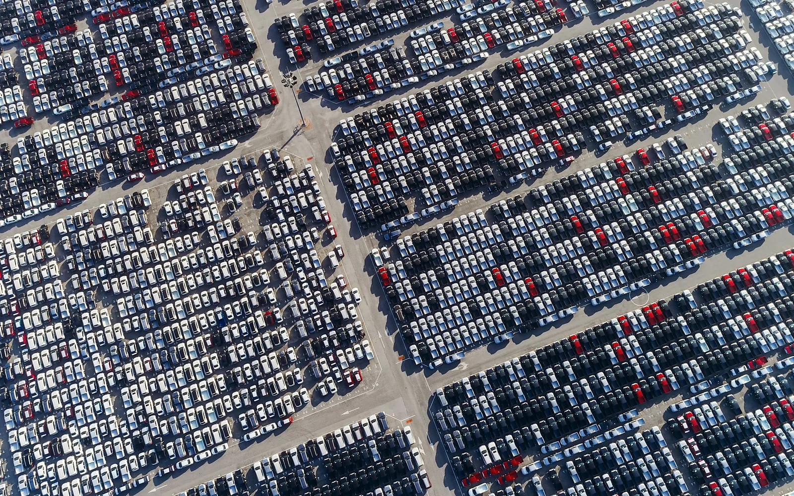

The first company to escape the EU's duty on Chinese-built electric vehicles was Volkswagen. Why Europe is conditioning investment by Chinese carmakers rather than taxing their imports, and what the record shows those conditions actually delivered.
Instant PDF download via Stripe secure checkout.
Questions? contact@marketaccess-x.com

A duty is a price. What is replacing it is a set of terms. The European Union has not decided to keep Chinese vehicles out, and the registration data shows it has not achieved that outcome either. It is deciding what a firm must do inside the Union in order to sell into it, and it is placing that decision with national authorities operating under criteria written in Brussels, with a lever above them for the largest cases. This report shows where the cost has moved, what the same conditions produced the one time they ran at scale, and why a second jurisdiction is now legislating over the same technology.
On February 10, 2026, the European Commission accepted a price undertaking that released one exporter from the countervailing duties on battery electric vehicles built in China. The beneficiary was Volkswagen. In exchange for the duty suspension, the exporter accepted a minimum import price, a cap on volume, sale through a single customer, continued reporting on exports and resales, and binding commitments to invest in EV projects inside the EU against defined milestones, enforceable by retroactive reimposition of the duty.
Most analysis of the EU response to Chinese vehicles is still counting tariff rates, and the tariff is now the smallest and most predictable part of the exposure. The duty leaves an exporter three options: pay it, negotiate an undertaking, or produce inside the Union. Two of those three carry conditions, and the conditions are of a different character from the duty they replace. A duty is finite, priced, and collected at the border. What sits behind the other two options is a set of ongoing obligations about price, ownership, workforce, technology, and sourcing, assessed case by case and enforced through discretionary approval. This report maps where that cost actually sits, who decides, and what a firm should and should not expect the conditions to deliver.
The exit from the duty is a supervised relationship, and the first firm to take it was a European incumbent. The accepted undertaking carries a minimum import price, a volume cap, single-customer channeling, continuing reporting, and enforceable EU investment milestones. Undertakings are ordinary trade defense practice; the explicit link between duty relief and investment conduct is not.
The proposed second gate conditions the investment itself. The Industrial Accelerator Act would require prior authorization above EUR 100 million where the investor's home country holds more than 40 percent of global manufacturing capacity, and approval would turn on workforce composition, an ownership cap, a joint venture, IP licensing, research spend, and input sourcing.
The decision is national, but there is a lever above it. A member state authority would issue the reasoned decision, while the Commission holds a call-in power above EUR 1 billion, a delay where a national decision departs from its opinion, and the power to set conditions in multi-state disputes. Every significant Chinese investment announced to date clears the call-in threshold.
The instrument set has an operating history, and it is more equivocal than either side assumes. The empirical literature on China's own automotive regime divides on how much transferred, but converges on two points: the gains reached the joint venture partner rather than the wider industry, and they traveled through worker mobility and supplier networks rather than through the licensing arrangement.
The Commission has been on both sides of this instrument in seven years. Its 2019 China strategy named technology transfer among the onerous preconditions European operators faced in China. The 2026 recitals invoke technology transfer as an objective. Reciprocity, the frame that carried the 2019 document, appears nowhere in the 2026 text.
A second jurisdiction is writing rules over the same technology. Transferring controlled technology to a European entity requires a Chinese export license, with no exemption for a firm's own joint venture. The overlap is currently narrow, but the structure firms use to stay clear of it, assembly abroad and process technology at home, is what the European recitals identify as the problem.
What the January 2026 Guidance requires, what the accepted February undertaking contains, and how a supervised price and channel arrangement with investment milestones compares with simply paying the duty. Plus why the scope of a current instrument is a poor guide to the scope of exposure.
The two thresholds that bring an investment into scope and into the Commission's reach, the six Article 18 criteria and how many must be met, the suspensory approval clock, the penalty exposure, and the legislative state of play including which provisions are contested and by whom.
Specific actions for government affairs leads, compliance officers, and supply chain strategy, including how to establish whether your exposure sits at the border or at the investment, why to structure now for criteria you may have to meet later, and which of the six thresholds are most likely to move in negotiation.
The Commission names China's own automotive conditionality as the precedent for what it proposes. This report tests that precedent against the peer-reviewed evidence, sets out the strongest published case on the other side rather than burying it, and reports where the Commission's own Regulatory Scrutiny Board found the analysis wanting.
China has a panel running against the definitive duties, and the parties have agreed Article 25 arbitration procedures giving effect to the MPIA for this dispute specifically, so an appeal would be arbitrated rather than lodged into a non-functioning Appellate Body. The report sets out which of China’s claims a re-determination could answer, which one it could not, and why neither outcome reaches the conditions the rest of the report is about.
15 pages. Primary regulatory sources and peer-reviewed evidence. Every paragraph earns its place.
Instant PDF download via Stripe secure checkout.
Payment processed securely by Stripe. PDF delivered immediately after purchase.
Questions? contact@marketaccess-x.com
New reports and market intelligence, direct to your inbox.